これは見本です（本番は変えていません）。あなたが 2026-10-30 に付けた ○×−（見本 36 枚＋BLEACH のいま 18 枚）を正解にして、「どの絵をどう切るか」の規則を作り直しました。
- 規則は測れる数だけ：①顔のアップ（顔の下の肩と胸が顔の高さの 0.7 倍未満・頭の上の余りが顔の高さ未満）＝ × ②胸像に切ると頭の上が枠で切れる＝ × ③短い辺 150px 未満＝ × ④顔が見つからない絵は −（使えるが後ろ）。
- 胸像がだめでも元の絵が良ければ元の絵を出す（恋次：いま ○・新しい ×）。人気の順位は使わない（印と関係が薄かった）。
- 数字は印に合わせて決めたので、同じ印への一致は甘く出ます。本当の確かめは下の「同じ 3 版面で規則が選ぶ絵」に ○×− を付け直してもらうこと。
① あなたの印との一致率絵は印を付けた版（2026-10-26）のもの。今の版面とは絵が違う
新しい（胸像）：28 / 36 一致
× を「出す」と判定：0 / 16（目標 0） ○ を「出す」と判定：13 / 17（目標は全部）
1 枚ずつの表（印・規則・理由）
| 版面 | 名前 | あなたの印 | 規則 | 理由 | |
|---|---|---|---|---|---|
| BLEACH M | Byakuya Kuchiki | ○ | − | 違う | 顔が見つからない＝胸像にせず後ろ |
| BLEACH M | Yasutora Sado | ○ | − | 違う | 顔が見つからない＝胸像にせず後ろ |
| BLEACH M | Suì-Fēng | ○ | ○ | 一致 | 顔の下に肩と胸が足りている・頭が切れない |
| BLEACH M | Rukia Kuchiki | × | × | 一致 | 顔のアップ（顔の下 0.19 倍＜0.7）＝縮めると上が空く |
| BLEACH M | Tōshirō Hitsugaya | × | − | 違う | 顔が見つからない＝胸像にせず後ろ |
| BLEACH M | Orihime Inoue | × | × | 一致 | 顔のアップ（顔の下 0.28 倍＜0.7）＝縮めると上が空く |
| BLEACH M | Renji Abarai | × | × | 一致 | 胸像に切ると頭の上が枠で切れる |
| BLEACH M | Rangiku Matsumoto | × | × | 一致 | 顔のアップ（顔の下 0.14 倍＜0.7）＝縮めると上が空く |
| BLEACH M | Grimmjow Jaegerjaquez | × | × | 一致 | 顔のアップ（顔の下 0.18 倍＜0.7）＝縮めると上が空く |
| BLEACH M | Gin Ichimaru | × | × | 一致 | 小さすぎる（短い辺 111px） |
| BLEACH M | Ulquiorra Cifer | × | × | 一致 | 顔のアップ（顔の下 0.16 倍＜0.7）＝縮めると上が空く |
| BLEACH M | Shūhei Hisagi | × | × | 一致 | 顔のアップ（顔の下 0.22 倍＜0.7）＝縮めると上が空く |
| チェーンソーマン | Makima | ○ | ○ | 一致 | 顔の下に肩と胸が足りている・頭が切れない |
| チェーンソーマン | Angel Devil | ○ | ○ | 一致 | 顔の下に肩と胸が足りている・頭が切れない |
| チェーンソーマン | Akane Sawatari | ○ | ○ | 一致 | 顔の下に肩と胸が足りている・頭が切れない |
| チェーンソーマン | Princi | ○ | ○ | 一致 | 顔の下に肩と胸が足りている・頭が切れない |
| チェーンソーマン | Gun Devil | ○ | − | 違う | 顔が見つからない＝胸像にせず後ろ |
| チェーンソーマン | Hirokazu Arai | ○ | ○ | 一致 | 顔の下に肩と胸が足りている・頭が切れない |
| チェーンソーマン | Denji | × | × | 一致 | 胸像に切ると頭の上が枠で切れる |
| チェーンソーマン | Power | × | − | 違う | 顔が見つからない＝胸像にせず後ろ |
| チェーンソーマン | Mysterious Man | × | − | 違う | 顔が見つからない＝胸像にせず後ろ |
| チェーンソーマン | Aki Hayakawa | − | − | 一致 | 顔が見つからない＝胸像にせず後ろ |
| チェーンソーマン | Kobeni Higashiyama | − | − | 一致 | 顔が見つからない＝胸像にせず後ろ |
| チェーンソーマン | Beam | − | − | 一致 | 顔が見つからない＝胸像にせず後ろ |
| 哈利波特剧集 | Harry Potter（Dominic McLaughlin） | ○ | ○ | 一致 | 顔の下に肩と胸が足りている・頭が切れない |
| 哈利波特剧集 | Severus Snape（Paapa Essiedu） | ○ | ○ | 一致 | 顔の下に肩と胸が足りている・頭が切れない |
| 哈利波特剧集 | Hermione Granger（Arabella Stanton） | ○ | ○ | 一致 | 顔の下に肩と胸が足りている・頭が切れない |
| 哈利波特剧集 | Draco Malfoy（Lox Pratt） | ○ | ○ | 一致 | 顔の下に肩と胸が足りている・頭が切れない |
| 哈利波特剧集 | Minerva McGonagall（Janet McTeer） | ○ | ○ | 一致 | 顔の下に肩と胸が足りている・頭が切れない |
| 哈利波特剧集 | Peeves（Peter Serafinowicz） | ○ | − | 違う | 顔が見つからない＝胸像にせず後ろ |
| 哈利波特剧集 | Gregory Goyle（William Nash） | ○ | ○ | 一致 | 顔の下に肩と胸が足りている・頭が切れない |
| 哈利波特剧集 | Ronald Weasley（Alastair Stout） | ○ | ○ | 一致 | 顔の下に肩と胸が足りている・頭が切れない |
| 哈利波特剧集 | Rubeus Hagrid（Nick Frost） | × | × | 一致 | 小さすぎる（短い辺 146px） |
| 哈利波特剧集 | Gilderoy Lockhart（Kit Harington） | × | × | 一致 | 顔のアップ（顔の下 0.18 倍＜0.7）＝縮めると上が空く |
| 哈利波特剧集 | Quirinus Quirrell（Luke Thallon） | × | × | 一致 | 顔のアップ（顔の下 0.63 倍＜0.7）＝縮めると上が空く |
| 哈利波特剧集 | George Weasley（Gabriel Harland） | × | − | 違う | 顔が見つからない＝胸像にせず後ろ |
いま（元の絵）：11 / 18 一致
× を「出す」と判定：1 / 12（目標 0） ○ を「出す」と判定：2 / 5（目標は全部）
1 枚ずつの表（印・規則・理由）
| 版面 | 名前 | あなたの印 | 規則 | 理由 | |
|---|---|---|---|---|---|
| BLEACH M | Renji Abarai | ○ | ○ | 一致 | 顔も肩も入っている |
| BLEACH M | Yasutora Sado | ○ | − | 違う | 顔が見つからない＝使えるが後ろ |
| BLEACH M | Byakuya Kuchiki | ○ | − | 違う | 顔が見つからない＝使えるが後ろ |
| BLEACH M | Suì-Fēng | ○ | ○ | 一致 | 顔も肩も入っている |
| BLEACH M | Kon | ○ | − | 違う | 顔が見つからない＝使えるが後ろ |
| BLEACH M | Rukia Kuchiki | × | × | 一致 | 顔のアップ（顔の下 0.19 倍） |
| BLEACH M | Orihime Inoue | × | × | 一致 | 顔のアップ（顔の下 0.28 倍） |
| BLEACH M | Tōshirō Hitsugaya | × | − | 違う | 顔が見つからない＝使えるが後ろ |
| BLEACH M | Rangiku Matsumoto | × | × | 一致 | 顔のアップ（顔の下 0.14 倍） |
| BLEACH M | Ikkaku Madarame | × | ○ | 違う | 顔も肩も入っている |
| BLEACH M | Gin Ichimaru | × | × | 一致 | 小さすぎる（短い辺 111px） |
| BLEACH M | Isshin Kurosaki | × | × | 一致 | 顔のアップ（顔の下 0.29 倍） |
| BLEACH M | Shūhei Hisagi | × | × | 一致 | 顔のアップ（顔の下 0.22 倍） |
| BLEACH M | Yhwach | × | − | 違う | 顔が見つからない＝使えるが後ろ |
| BLEACH M | Yumichika Ayasegawa | × | × | 一致 | 小さすぎる（短い辺 136px） |
| BLEACH M | Sajin Komamura | × | − | 違う | 顔が見つからない＝使えるが後ろ |
| BLEACH M | Nanao Ise | × | × | 一致 | 顔のアップ（顔の下 0.39 倍） |
| BLEACH M | Genryūsai Shigekuni Yamamoto | − | − | 一致 | 顔が見つからない＝使えるが後ろ |
② 聞きたいこと（規則で分けられなかった所）
- 顔が見つからない ○ が 5 枚（Gun Devil・Peeves・Kon・Byakuya・Sado）は規則が − にしてしまう：人でない（悪魔・妖精・マスコット）か公式の立ち絵。測るだけでは × の Power・Mysterious Man・George と見分けがつきません。 案 A「人でない・公式の立ち絵」の印を取る（Fandom の種族・出どころから。良い点：○ が全部出る／困る点：出どころの記録が要る）／案 B そのまま − で後ろに置く（良い点：何も足さない／困る点：Gun Devil のような版面の顔が出ない）。おすすめ A。
- × を出してしまうのは 1 枚（Ikkaku：色が薄く切り抜きの縁が欠けた絵）。これは「切り抜きの縁の欠け」を測る別の規則が要ります（次の段）。
③ 同じ 3 版面で、規則が選ぶ絵（いまの版面の絵）金の影＝元の絵のまま（胸像だと悪くなるので）。○×− を付け直してください
BLEACH Mirrors Highいまの版面の 38 枚 → 出す 17・後ろ 13・出さない 8
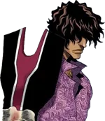
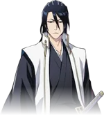
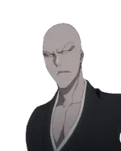
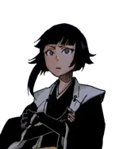
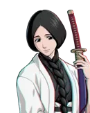
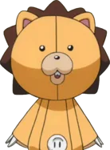
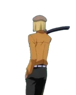
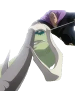
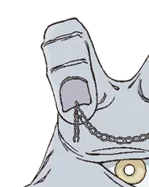
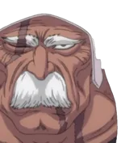
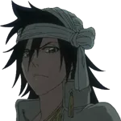
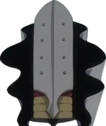
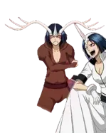
出さない 8 枚（理由つき・先頭 8）
- Nanao Ise：顔のアップ（顔の下 0.22 倍＜0.7）＝縮めると上が空く
- Yuzu Kurosaki：顔のアップ（顔の下 0.34 倍＜0.7）＝縮めると上が空く
- Karin Kurosaki：顔のアップ（顔の下 0.56 倍＜0.7）＝縮めると上が空く
- Yammy Llargo：顔のアップ（顔の下 0.41 倍＜0.7）＝縮めると上が空く
- Kenpachi Kiganjō：顔のアップ（顔の下 0.31 倍＜0.7）＝縮めると上が空く
- Haineko (Zanpakutō spirit)：顔のアップ（顔の下 0.40 倍＜0.7）＝縮めると上が空く
- Nikita Deslock：顔のアップ（顔の下 0.28 倍＜0.7）＝縮めると上が空く
- Sode no Shirayuki (Zanpakutō spirit)：顔のアップ（顔の下 0.54 倍＜0.7）＝縮めると上が空く
チェーンソーマンいまの版面の 26 枚 → 出す 9・後ろ 13・出さない 4
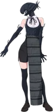
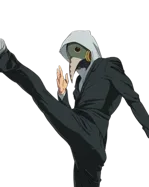
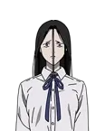
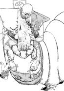
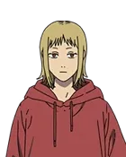
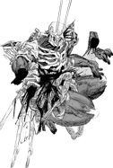
出さない 4 枚（理由つき・先頭 8）
- Makima：小さすぎる（短い辺 121px）
- Kobeni Higashiyama：小さすぎる（短い辺 133px）
- Hirokazu Arai：小さすぎる（短い辺 142px）
- Nomo：小さすぎる（短い辺 142px）
哈利波特剧集いまの版面の 12 枚 → 出す 9・後ろ 2・出さない 1
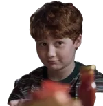
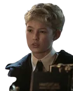
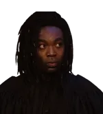
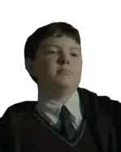
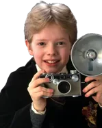
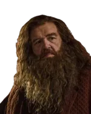
出さない 1 枚（理由つき・先頭 8）
- Quirinus Quirrell（Luke Thallon）：顔のアップ（顔の下 0.63 倍＜0.7）＝縮めると上が空く